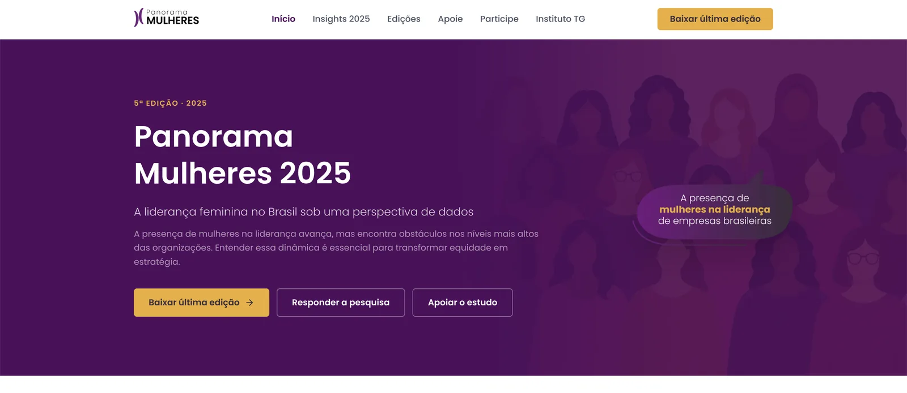
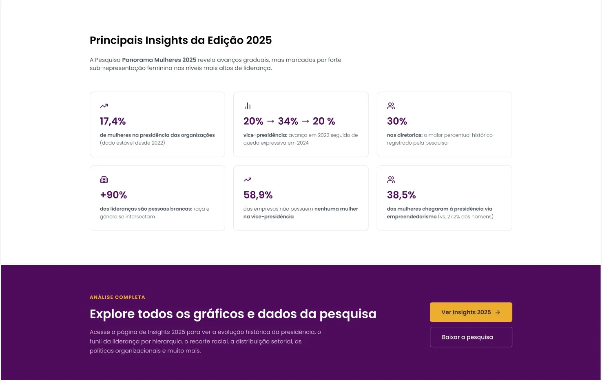
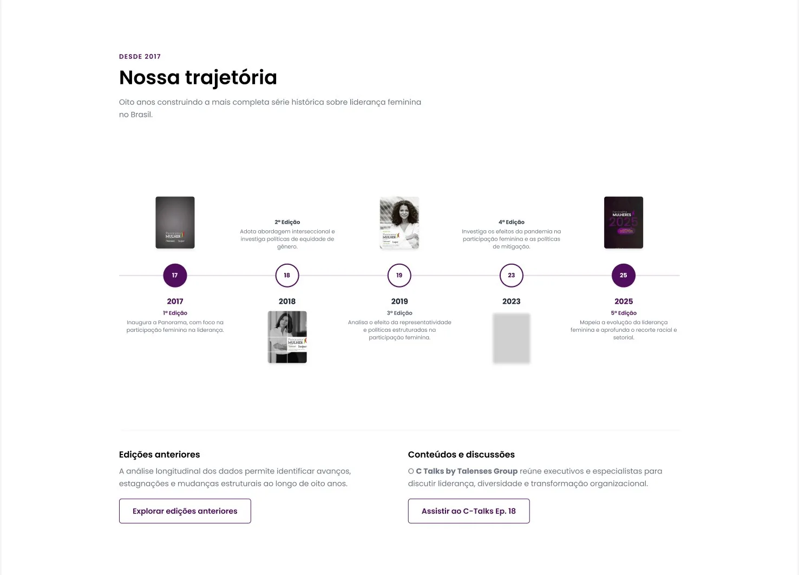
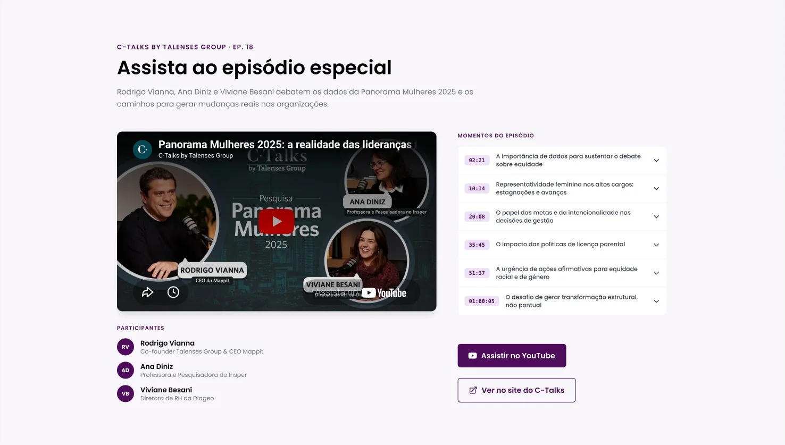
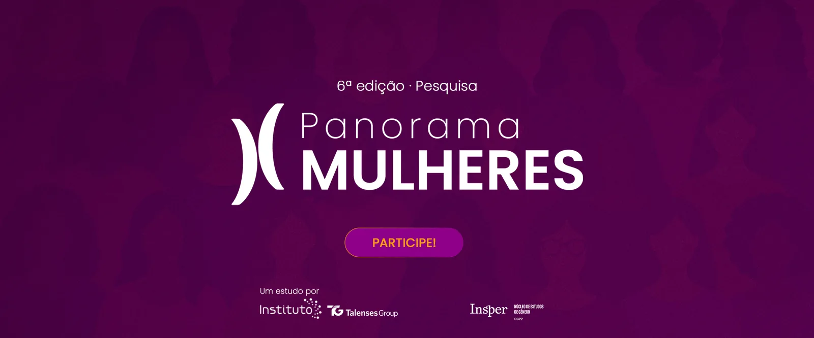
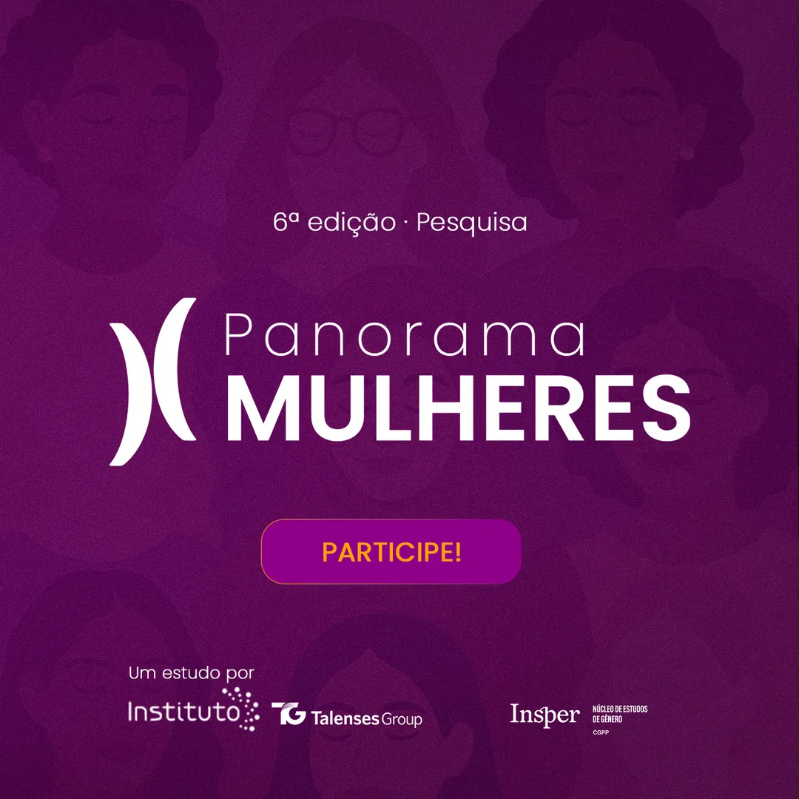
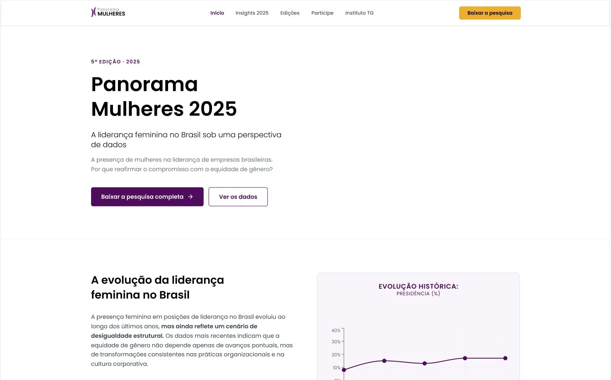

Instituto Talenses Group × Insper · 2025–2026
Panorama Mulheres
Site da pesquisa que acompanha a liderança feminina no Brasil desde 2017. Organizei dados, insights e as edições numa experiência clara. Também criei o design system e a campanha “Participe!” da 6ª edição.
Ver site no ar ↗
O desafio
O Panorama Mulheres é uma pesquisa do Instituto Talenses Group com o Núcleo de Estudos de Gênero do Insper. Os dados são ricos, mas estavam espalhados em PDFs e e-books de várias edições.
O site precisava contar a história da pesquisa, destacar os números certos e convidar empresas a responder e apoiar.
O processo
Organizei a página em camadas: o propósito, a pesquisa em números, os principais insights da edição e chamadas claras para baixar, responder e apoiar.

A linha do tempo junta as edições desde 2017 e o episódio do C-Talks sobre a pesquisa, para mostrar a série histórica como um ativo do Instituto.


Levei tudo para um design system no Figma, com componentes e variáveis, e usei esse sistema para a campanha “Participe!” da 6ª edição.

O resultado
O site virou a casa da pesquisa: reúne a série histórica, os insights da 5ª edição e a porta de entrada para as empresas participarem da próxima.
- 2017início da série histórica
- 310empresas respondentes em 2024
- 5ªedição publicada no site
- 6ªedição com campanha “Participe!”

